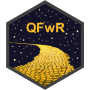

Quantitative Finance with R
课程主页
课程安排
每周资料
小组项目
课程安排
注释
本页包含本课程周次安排、教学主题、课前准备、讲义、课后作业、小组项目等方面的 概要信息以及相应的链接。 随着本学期教学进度的推进，本表格将逐步增补、调整并完善。
周次
日期
主题
准备
讲义
练习
作业
小组项目
1
2023-09-15
课程简介
📖
🖥️
✍️
2
2023-09-22
ggplot2 数据可视化
📖
🖥️
⌨️
✍️
3
2023-09-29
🥮 中秋节假期停课
4
2023-10-08
rmarkdown 与 Quarto
📖
🖥️
⌨️
✍️
5
2023-10-13
dplyr 数据处理 I
📖
🖥️
⌨️
✍️
6
2023-10-20
dplyr 数据处理 II
📖
🖥️
⌨️
✍️